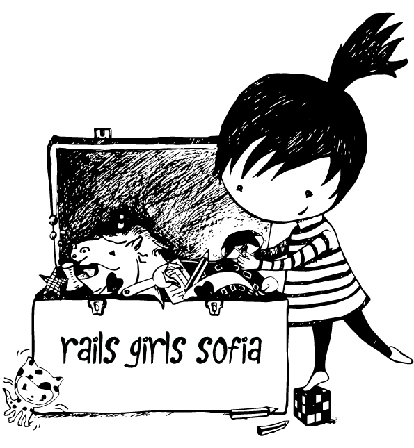

Какво са учебните групи на Rails Girls Sofia
Rails Girls Sofia учебните групи са безплатни ежеседмични сбирки след работно време, организирани на доброволни начала, на които всеки, който има любопитство към или интерес да трупа знания в сферата на програмиране, технологии и IT, може да реши да идва, за да получава напътствия от по-опитни инструктори-програмисти. Чудите се дали бихте се справили и дали би ви било интересно, не сте сигурни откъде да започнете или накъде да вървите, или имате нужда от някой, който да ви отговори на въпросите – учебните групи са мястото за вас.
Групите стартират през март 2014 г. след провелото се тогава второ издание на Rails Girls Sofia. От тогава до днес, сбирки има всяка седмица, с някои изключения около празници или около Rails Girls Sofia събития.
Седмичните занимания създават ритъм и регулярност и помагат да се придвижвате напред със сигурно темпо, каквато и да е крайната ви цел, дори и да нямате все още конкретна такава.
Групите са малки, максимум 8-10 човека на ден. Няма обща програма, по която да се движат всички – всеки участник следва индивидуален план със собственото си темпо. От време на време се организират презентации и обяснения от страна на инструкторите на теми, които са интересни за всички – от това как работи интернет, какво е IP, рутер и DNS, през протоколи и мрежови слоеве, до системи за контрол на версиите, терминал и работа с Git. Понякога се разчита и на взаимопомощ между участниците. Няма изрична домашна работа, но при наличие на време и желание, задачи се намират :)
Учебните групи са насочени предимно към дами. Често участничките са минали през Rails Girls Sofia събитие, но това не е нито задължително, нито дори необходимо условие. Едни от най-успешните ни участнички просто са чули отнякъде за групите и са се осмелили да дойдат веднъж :)
Най-важното за групите
- Обикновено четвъртък и/или петък, в зависимост от това кога има налични инструктори.
- След работно време – от 19:30 до 22:00 ч.
- На всяка сбирка ще има поне един инструктор.
- За всяка среща има максимум 10 места за участнички.
- Ако има места, няма да има проблем да идвате и повече от веднъж седмично.
- Няма да бъде фатално, ако от време на време пропускате.
- Няма да има изрична работа за “домашно”, но ще има насоки и ще може да правите неща самостоятелно вкъщи, ако имате време и желание. Това винаги се насърчава, защото така прогресът е много по-бърз и осезаем.
- Безплатни и свободни за достъп, насочени предимно към дами. Това не значи, че няма да има организация, защото иначе няма да се съберем.
- Няма никакви предварителни изисквания към участниците.
- Всеки, посещаващ групите, се задължава да прочете и да спазва правилата на Puzl CowOrKing.
Какво се случва, като дойда за пръв път на групите?
Запознаваме се и си говорим, за да придобием представа за опита и интересите ви и да може да ви предложим най-подходящия, според нас, план за движение. И след това ви даваме първите неща, които да четете или да правите.
Трябва ли да имам някакъв опит предварително?
Не е нужно да имате никакъв опит. Приемаме напълно начинаещи. От друга страна, напълно допустимо е да идвате и ако имате някакъв опит, но искате да получите допълнителни насоки, да си сверите часовника или да получите помощ за нещо.
Трябва ли да знам какво искам да правя?
Въпреки, че помага, не е нужно :) Може да дойдете само с любопитство и желание да видите за какво става дума и дали изобщо има почва у вас за туй нещо "програмирането" и има ли някаква реална полза за вас от това умение :)
Ако реша да дойда, поемам ли някакъв ангажимент?
Освен към вас самите – не. Може да дойдете само веднъж и повече да не се появите, няма да се обидим. :) Единствената ни молба е ако сте се обелязали в графика, че ще идвате и се окаже, че няма да може да дойдете, да се махнете от там, за да имаме ясна представа колко човека да чакаме на сбирката.
Какво ми е необходимо, за да идвам?
Лаптоп с работещ WiFi адаптер и модерен браузър (например, Google Chrome, Mozilla Firefox или Microsoft Edge). В повечето случаи, и Windows, и Linux ще свършат работа, макар че на Linux нещата са по-лесни. На мястото има интернет и ток.
С какво ще се занимавам по време на сбирките?
Програмата е индивидуална и всеки от вас може да прави нещо различно, с различни ресурси, инструменти и темпо. Обикновено участниците или четат ръководства и материали, или работят над малки задачки, дадени им от инструкторите, или пък слушат презентация на някаква тема от инструктора.
Обикновено общата посока за всички е уеб програмиране, което значи, че в един или друг момент се минава през HTML, CSS, JavaScript и евентуално още някакъв език за програмиране – например, Ruby или Python. Въпреки това, не сме заковани за една-единствена технология и повечето инструктори могат да ви помагат и с други езици и платформи, като C# и .NET, Java, C++ и прочее. Също така, не всички се занимават с frontend, или пък с backend – някои се фокусират само върху едната страна на монетата, което също е окей.
Най-оптималният начин да прекарате времето на сбирките е да се възползвате от присъствието на инструктора и да задавате въпроси за неща, с които сте се занимавали извън групите – примерно, въпроси върху материали, които сте прочели, задачи, с които сте се занимавали, или проблеми, които имате с проект, над който работите.
В началото вероятно ще се занимавате предимно самостоятелно с четене и експериментиране на наученото, за да натрупате базово ниво на знания в една или повече технологии. Впоследствие, с помощта на инструкторите, ще бъде измислен проект, над който да работите самостоятелно или в малък екип, за да доразвиете своите умения. Въпросният проект може да бъде както изцяло с учебна цел, така и нещо реално, от което вие имате нужда, например.
Как да се запиша?
Присъединете се към организационната група във Facebook, или, ако не ползвате Facebook, пишете ни, за да ви добавим в пощенския ни списък.
Всеки понеделник на тези две места се публикува "график" за текущата седмица, в който всеки, желаещ да присъства, си попълва името в деня, в който смята да дойде. Дори да идвате за пръв път, това е напълно достатъчно. Като дойдете, ще се запознаем и ще преценим с какво ще бъде най-удачно да започнете.
Единствената ни молба е да не се записвате, ако вече има 10 записали се човека за дадения ден, както и ако сте се записали, но се окаже, че не може да дойдете (дори да разберете това един час преди началото на групата), да се отпишете, за да знаем колко човека да очакваме за сбирката.
Имаме и организация в Slack, където добавяме хора, които са посещавали групите известно време, за да им дадем възможност да си общуват и да задават въпроси и извън времето на групите. Ако искате да ви добавим в този чат, питайте инструктора на някоя от сбирките.
Къде и кога са сбирките?
Срещите са обикновено четвъртък и петък, от 19:30 до 22:00. Възможните дни за текущата седмица се пускат всеки понеделник в организационната група във Facebook и в пощенския ни списък за тези, които не използват Facebook. Всеки си записва името в деня, в който смята да дойде.
Сбирките се организират в Puzl CowOrKing на адрес бул. Черни връх 47А, етаж 4. В същата сграда има магазин Lidl, а отпред има паркинг. Най-близката метростанция е "Витоша" (до Парадайс център, на около 4-5 минути пеша), наблизо минава и трамвай 10.
Полезни връзки
- Организационна група във Facebook
- Ръководства и материали
- Сайт на събитието Rails Girls Sofia
- Кратки статии и задачи за начинащеи за Ruby
- По-стари и некатегоризирани записки, ресурси и ръководства
- Организация в GitHub
Правила
Групите са безплатни, но това не означава, че не спазваме правила при организацията им.
От всеки посетител и участник в групите очакваме да се грижи като добър стопанин за имуществото на нашите домакини от Puzl CowOrKing, да почиства след себе си, да е прочел правилата на споделеното пространство и да ги спазва. Посещавайки сбирките, вие давате съгласие, че ще спазвате тези правила и поемате отговорност при неспазването им от ваша страна.